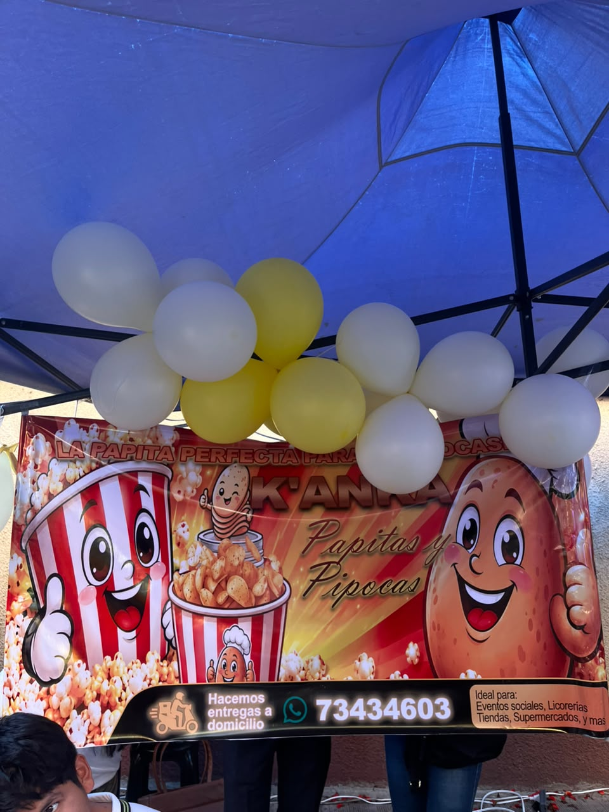
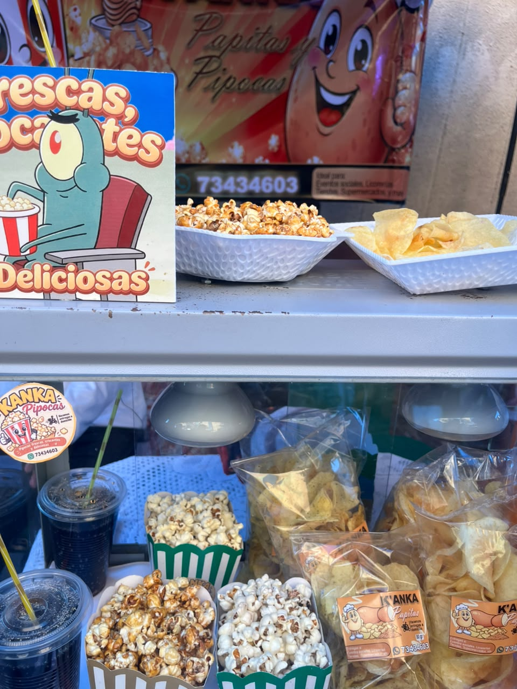
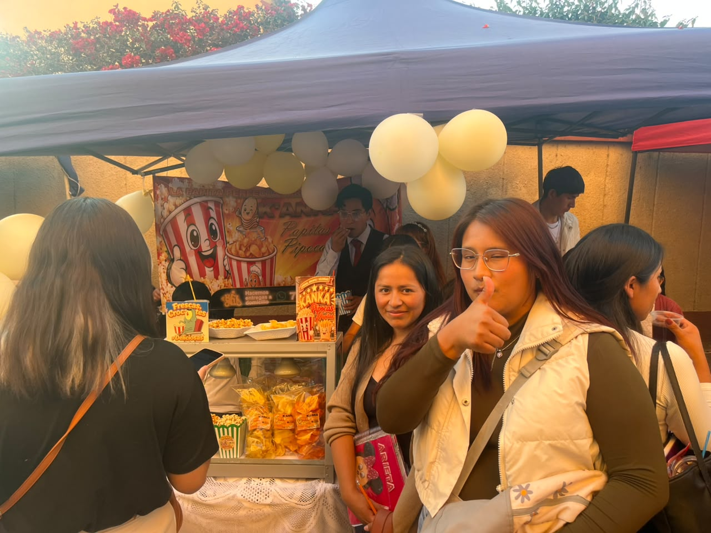

FEXPO ITSEC 2026 - ¡Bienvenidos!
En la FEXPO ITSEC Sucre se presentan diferentes emprendimientos que demuestran la creatividad y el esfuerzo de sus propietarios. Entre ellos se encuentra KANKA, un negocio dedicado a la preparación y venta de palomitas de maíz y papas fritas, ideales para disfrutar en reuniones y eventos especiales.



KANKA es un emprendimiento gastronómico dedicado a la elaboración y comercialización de snacks. Su oferta incluye palomitas de maíz y papas fritas, productos ideales para compartir con familiares y amigos durante diferentes actividades y momentos de entretenimiento.
Entre sus productos destacan las palomitas de maíz y las papas fritas en sus variedades tradicionales y picantes. Esta diversidad permite ofrecer alternativas para diferentes gustos y preferencias. Además, cuenta con distintos precios para adaptarse a las necesidades de sus clientes.
La propietaria del emprendimiento es Maruja Ticona Bautista, quien inició este proyecto hace aproximadamente tres meses, con un capital inicial de 350 bolivianos. A partir de esta inversión, comenzó a desarrollar su actividad comercial con el objetivo de ofrecer productos accesibles y de buena aceptación entre los consumidores.
KANKA no cuenta con una tienda física. Sus productos se promocionan principalmente mediante Facebook y las recomendaciones de conocidos, lo que le permite dar a conocer su oferta y establecer contacto con nuevos clientes.
Una de las características del negocio es que también acepta pedidos para diferentes eventos, como cumpleaños, reuniones familiares, celebraciones y otras actividades. Esta modalidad permite preparar las cantidades solicitadas de acuerdo con las necesidades de cada cliente.
Para continuar creciendo, KANKA puede fortalecer su presencia en las redes sociales, publicar fotografías de sus productos, organizar un catálogo con precios y presentaciones, y planificar con anticipación los pedidos para eventos. Estas acciones pueden ayudar a mejorar su organización y ampliar su alcance comercial.
La participación de KANKA en la FEXPO ITSEC permite promocionar sus productos, dar a conocer el trabajo de su propietaria y demostrar cómo una pequeña inversión, acompañada de dedicación y creatividad, puede convertirse en una oportunidad de emprendimiento.